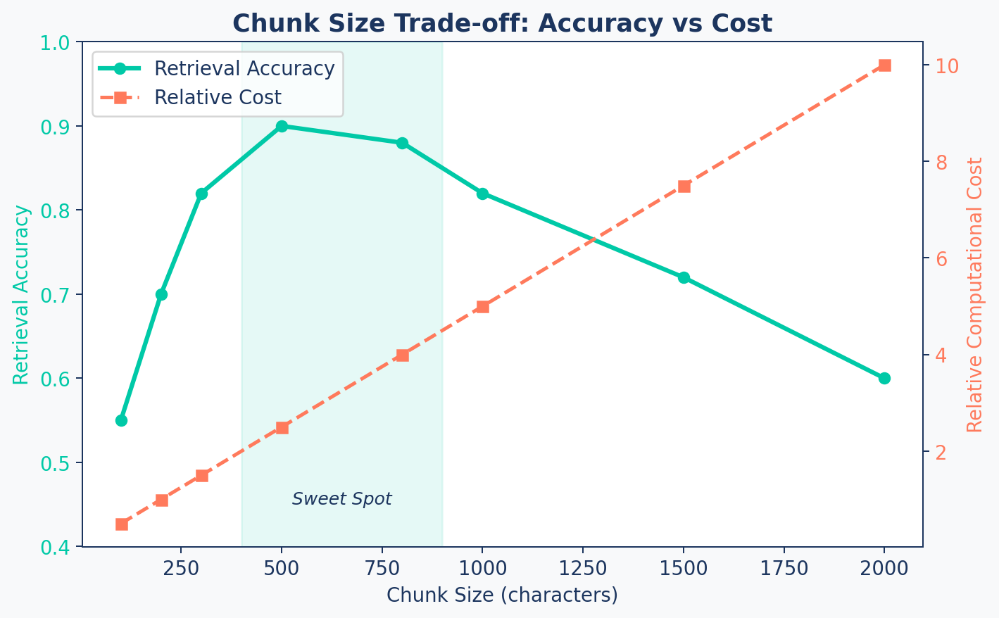
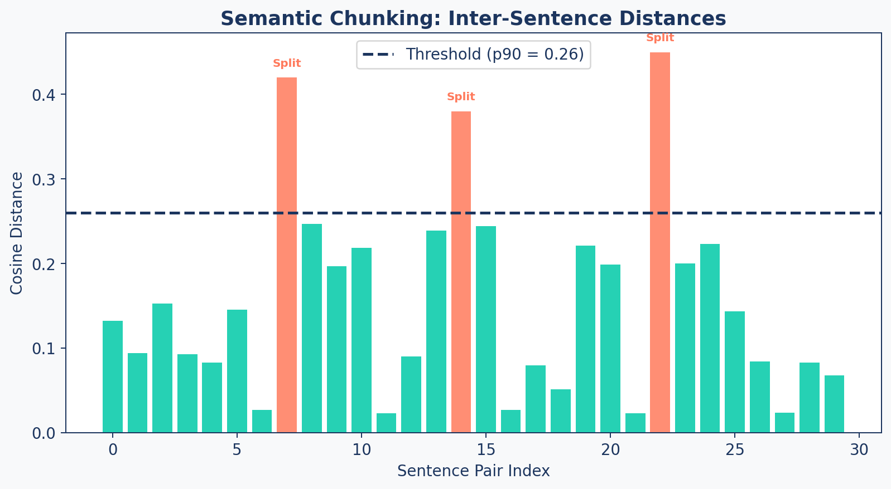
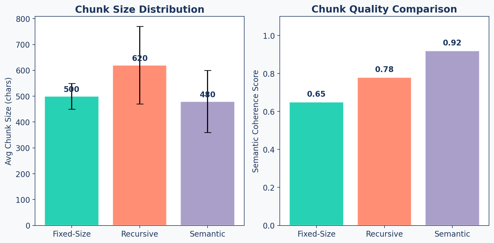

graph LR
A["Full Document<br/>(10,000 chars)"] --> B["Chunk 1<br/>(0-500)"]
A --> C["Chunk 2<br/>(400-900)"]
A --> D["Chunk 3<br/>(800-1300)"]
A --> E["...<br/>(overlap)"]
style A fill:#1C355E,stroke:#1C355E,color:#fff
style B fill:#00C9A7,stroke:#1C355E,color:#fff
style C fill:#FF7A5C,stroke:#1C355E,color:#fff
style D fill:#9B8EC0,stroke:#1C355E,color:#fff
style E fill:#00C9A7,stroke:#1C355E,color:#fff
Chunking Strategies
RAG Foundations & Data Pipelines — Session 2
2026-02-27
A. Why Chunking Matters
One of the most impactful decisions in RAG quality
Agenda
- A. Why Chunking Matters — The foundational trade-off
- B. Fixed-Size Chunking — The baseline approach
- C. Document-Aware Chunking — Respecting structure
- D. Semantic Chunking — Grouping by meaning
- E. Content-Type Strategies — Adapting to your data
- F. Evaluation & Wrap-up — Measuring what works
The Library Analogy
Chunks Too Small
Like tearing pages in half and filing them separately.
- Retriever finds a fragment
- Missing context and meaning
- LLM can’t make sense of it
Chunks Too Large
Like filing whole chapters together.
- Retriever returns a heavy tome
- Answer buried in irrelevant text
- Wastes tokens and increases cost
The Goal
The optimal chunk is the smallest unit that contains a complete, self-contained idea.
Chunk Size Trade-off
The Complete Idea Rule
Golden Rule of Chunking
A chunk should be meaningful on its own. If someone read only that chunk, would they understand the point?
- For a research paper → a section or subsection
- For a legal contract → a clause
- For code → a complete function
Production Tip: Always log your average chunk size and count. A sudden spike can indicate a formatting issue in your source data.
B. Fixed-Size Chunking
The fast, deterministic baseline
How It Works
Key parameters: chunk_size (characters) and chunk_overlap (sliding window)
Sliding Window
Document: |████████████████████████████████████████|
Chunk 1: |████████| chunk_size = 500
Chunk 2: |████████| overlap = 100
Chunk 3: |████████|
Chunk 4: |████████|Why overlap?
- Prevents ideas from being cut at boundaries
- Chunk 1 ends mid-sentence → overlap captures the rest in Chunk 2
- Typical overlap: 10-20% of chunk size
Code: FixedSizeChunker
class FixedSizeChunker(BaseChunker):
"""Splits text into fixed-size chunks with overlap."""
def chunk_document(self, document_text, metadata=None):
chunks = []
step_size = self.chunk_size - self.chunk_overlap
start = 0
while start < len(document_text):
end = min(start + self.chunk_size, len(document_text))
chunk_text = document_text[start:end]
if chunk_text.strip():
chunks.append(self._create_chunk_dict(
chunk_text, metadata, len(chunks)))
start += step_size
return chunksWhen Fixed-Size Works
| Scenario | Why It Works |
|---|---|
| Uniform text (news articles, chat logs) | Consistent structure, no sections |
| Quick prototyping | Fast to implement, no dependencies |
| Baseline comparison | Always test against this first |
| Code files | Functions are roughly uniform length |
Starting Point
chunk_size=800, chunk_overlap=150 is a solid baseline for research papers.
C. Document-Aware Chunking
Respecting natural boundaries
The Problem with Fixed-Size
Fixed-Size Output
Chunk 3: "...voltage regulation.
1.1 Background
Previous work used fixed-size ch"
Chunk 4: "unks. This often cuts sentences.
We propose a semantic method..."Section header split from its content!
Recursive Output
Chunk 3: "1.1 Background
Previous work used fixed-size chunks.
This often cuts sentences.
We propose a semantic method."Complete section preserved.
Recursive Splitting
flowchart LR
A["Full Document"] --> B{"Try split by<br/>paragraph (\\n\\n)"}
B -- "Chunks OK" --> G[Done]
B -- "Still too large" --> C{"Try split by<br/>line (\\n)"}
C -- "Chunks OK" --> G
C -- "Still too large" --> D{"Try split by<br/>sentence (. )"}
D -- "Chunks OK" --> G
D -- "Still too large" --> E{"Split by<br/>word ( )"}
E --> G
style A fill:#1C355E,stroke:#1C355E,color:#fff
style B fill:#00C9A7,stroke:#1C355E,color:#fff
style C fill:#FF7A5C,stroke:#1C355E,color:#fff
style D fill:#9B8EC0,stroke:#1C355E,color:#fff
style E fill:#00C9A7,stroke:#1C355E,color:#fff
style G fill:#1C355E,stroke:#1C355E,color:#fff
Code: RecursiveChunker
class RecursiveChunker(BaseChunker):
"""Tries to keep paragraphs, sentences, and words together."""
def __init__(self, chunk_size=500, chunk_overlap=50,
separators=None):
super().__init__(chunk_size, chunk_overlap)
self.separators = separators or [
"\n\n", "\n", ". ", " ", ""
]
self._splitter = RecursiveCharacterTextSplitter(
chunk_size=self.chunk_size,
chunk_overlap=self.chunk_overlap,
separators=self.separators,
)
def chunk_document(self, document_text, metadata=None):
text_chunks = self._splitter.split_text(document_text)
return [self._create_chunk_dict(text, metadata, i)
for i, text in enumerate(text_chunks)]Head-to-Head Comparison
| Aspect | Fixed-Size | Recursive |
|---|---|---|
| Speed | Fastest | Fast |
| Structure Awareness | None | Paragraph/section |
| Sentence Splitting | Frequent | Rare |
| Dependencies | None | LangChain |
| Best For | Uniform text | Structured documents |
D. Semantic Chunking
Using AI to find natural boundaries
Group by Meaning
Instead of splitting by character count or document structure, we split where the meaning changes.
The Algorithm:
- Split text into sentences
- Embed each sentence
- Compute cosine distance between adjacent sentences
- Split where distance exceeds a threshold
When two consecutive sentences are “about different things,” the cosine distance spikes.
Pipeline
sequenceDiagram
participant Doc as Document
participant S as Sentence Splitter
participant E as Embedding Model
participant T as Threshold Calculator
participant C as Chunk Builder
Doc->>S: Full text
S->>E: Individual sentences
E->>T: Sentence embeddings
T->>T: Cosine distances between adjacent pairs
T->>T: Select a threshold
T->>C: Split points identified
C->>C: Group sentences into chunks
Distance Plot
Cosine Distance (\(Distance = 1 - Similarity\)): High bars = different sentences. Bars above threshold = topic shifts.
The Threshold Dilemma
The Problem:
- How do you pick a fixed value for “different enough”?
- 0.5 might be a minor shift in one doc, but a major shift in another.
- Embedding distributions vary by Model and Content.
The Solution: Dynamic Thresholding
Instead of a hard-coded number, we use the 90th Percentile of all distances in the document.
- It adapts to the document’s specific “distance profile.”
- It ensures we only split on the most significant outliers.
Code: SemanticChunker
class SemanticChunker(BaseChunker):
def __init__(self, chunk_size=500, chunk_overlap=50,
embedding_model_name='all-MiniLM-L6-v2',
percentile_threshold=90):
super().__init__(chunk_size, chunk_overlap)
self.percentile_threshold = percentile_threshold
self.embedding_model = SentenceTransformer(
embedding_model_name)
def chunk_document(self, document_text, metadata=None):
sentences = [s.strip() for s in
document_text.split('. ') if s.strip()]
embeddings = self.embedding_model.encode(sentences)
distances = self._calculate_cosine_distances(embeddings)
threshold = np.percentile(
distances, self.percentile_threshold)
# Split where distance > threshold
...Percentile Threshold
| Percentile | Effect | Use When |
|---|---|---|
| 80 | More splits → smaller chunks | Short documents, high precision needed |
| 90 | Balanced (default) | General-purpose, research papers |
| 95 | Fewer splits → larger chunks | Long-form content, narrative text |
Cost Warning
Semantic chunking requires embedding every sentence. Use it for high-value documents during offline ingestion — never in real-time query paths.
E. Content-Type Strategies
One strategy doesn’t fit all
Factory Pattern
graph TD
A["ChunkerFactory"] --> B{"Content Type?"}
B -- "research_paper" --> C["RecursiveChunker"]
B -- "code" --> D["FixedSizeChunker"]
B -- "high_accuracy" --> E["SemanticChunker"]
B -- "legal_document" --> C
style A fill:#1C355E,stroke:#1C355E,color:#fff
style B fill:#9B8EC0,stroke:#1C355E,color:#fff
style C fill:#00C9A7,stroke:#1C355E,color:#fff
style D fill:#FF7A5C,stroke:#1C355E,color:#fff
style E fill:#9B8EC0,stroke:#1C355E,color:#fff
Content-Type Mapping
| Content Type | Strategy | Chunk Size | Why |
|---|---|---|---|
| Research papers | Recursive | 800-1000 | Respects sections and paragraphs |
| Legal documents | Recursive | 500-800 | Preserves clause boundaries |
| Code files | Fixed-size | 500-800 | Functions are roughly uniform |
| Chat logs | Fixed-size | 300-500 | Each message is a natural unit |
| High-value docs | Semantic | 500-800 | Maximum coherence worth the cost |
Code vs Prose vs Tables
Code
- Split by function/class boundaries
- Keep imports with their functions
- Fixed-size works well
- Consider
tree-sitterfor AST-aware splitting
Prose
- Split by paragraphs first
- Then by sentences
- Recursive is the sweet spot
- Overlap prevents context loss
Tables
- Keep headers with data rows
- Never split a row across chunks
- Consider converting to key-value text
- Markdown tables → structured text
Code: ChunkerFactory
class ChunkerFactory:
"""Factory to create the right chunker for the content."""
_content_type_mapping = {
'research_paper': 'recursive',
'legal_document': 'recursive',
'code': 'fixed',
'uniform_text': 'fixed',
'high_accuracy': 'semantic',
}
@classmethod
def get_chunker(cls, content_type='research_paper',
strategy=None, **kwargs):
if strategy is None:
strategy = cls._content_type_mapping.get(
content_type, 'fixed')
chunker_class = cls._strategies[strategy]
return chunker_class(**kwargs)F. Evaluation & Wrap-up
Measuring what works
Evaluating Strategies
Don’t guess — measure. For each strategy, track:
| Metric | What It Tells You |
|---|---|
| Avg chunk size | Are chunks in the sweet spot ? |
| Size std deviation | How variable are the chunks? |
| Chunk count | More chunks = higher storage + search cost |
| Semantic coherence | Does each chunk contain one idea? |
| Retrieval accuracy | Do correct chunks get retrieved for test queries? |
Strategy Comparison
The Overlap Rule
Tip
Overlap between chunks is a simple trick that prevents context loss at boundaries and significantly improves retrieval recall.
Rule of thumb: Overlap = 10-20% of chunk size
chunk_size=800→overlap=100-160chunk_size=500→overlap=50-100
Version your chunking strategy and include the chunker name in metadata. This enables A/B testing in production.
Key Takeaways
- Chunking is a high-leverage factor in RAG performance — invest heavily here
- Fixed-size is fast and deterministic — always your baseline
- Recursive splitting respects document structure — the production workhorse
- Semantic chunking groups by meaning — best quality, highest cost
- Factory pattern lets you swap strategies per content type
- Always measure — chunk size, coherence, and retrieval accuracy
Up Next
Lab 2: Build the Embedding Pipeline — implement chunking strategies, generate embeddings at scale, and handle API rate limits.